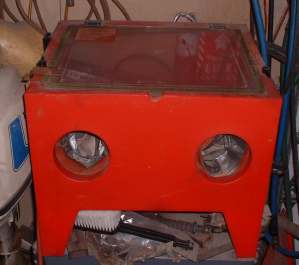
¶ Lots of times we run across motorcycle parts that have been, shall we say neglected? Parts that are badly corroded. To clean these parts we need more then than a tooth brush and some solvent. We need to really blast those parts clean.
A Sand Blaster takes the blasting media of your choice, blows it through a gun shaped nozzle and onto the part you want cleaned. This gun uses the venturi principle and compressed air to suck the blast media, through a tube, up into the gun and out the nozzle. A trigger on the gun controls the blast of air.
While there are lots of different grits and sizes and combinations of media it really boils down to this. There are basically, three types of blasting media.
- Walnut Shell
- Glass Beads
- Sand
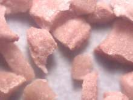 Walnut Shell at 60x |
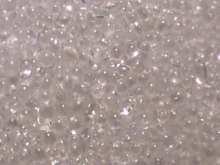 Glass Beads at 60x |
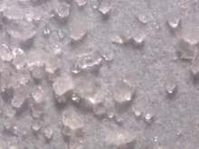 Sand at 60x |
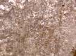
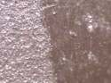
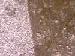
Sand tends to get into every crevice and hole and stay there no matter much you clean. This can be a problem. If a piece of walnut or a bead of glass gets into your engine things are not so bad. Sand is a different matter. It can really grind things up, so choose your blasting media carefully.
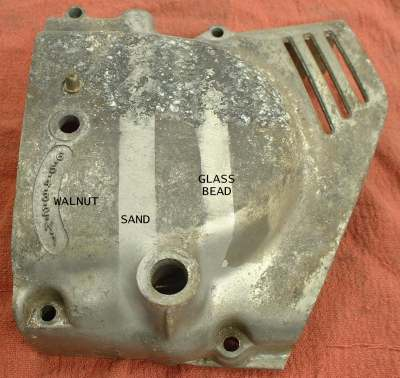
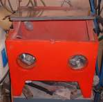
You don't have to have a cabinet but it sure helps if you do have one. You can just buy a portable gun and media hopper kit and have at it. This works but has two distinct disadvantages. One, it's wasteful and two it's down right messy. The blast media is reusable. Yes, it does wear out with use. However, unless you are working on a special project that needs a very uniform finish, you can reuse it many times. As to messy. This stuff goes everywhere. If it is contained in a blasting cabinet you will not be getting it in your mouth, down your back, in your ears, well, you get the picture.
If you have a part that is just too big for a Blast Cabinet (like a motorcycle frame) you can use a portable gun like the one above and then build a big tent out of 1x2 or 2x4 wood, plastic tarps and duct tape. Then blast away! When the media hopper is empty simply sweep up the spent media on the floor and put it back into the hopper. Build the tent big enough and you could blast a car body.
A word on safety here. If you use a blast tent or just blast out in the open you need a good respirator and good eye protection. Think about it. The blast media does degrade as you use it. Breathing glass dust or sand dust will not do your lungs or your eyes any good.

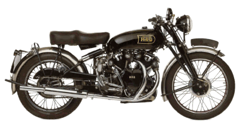 |
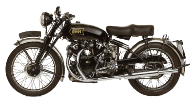 |
Copyright © 1999-2008 dansmc.com. All rights reserved.